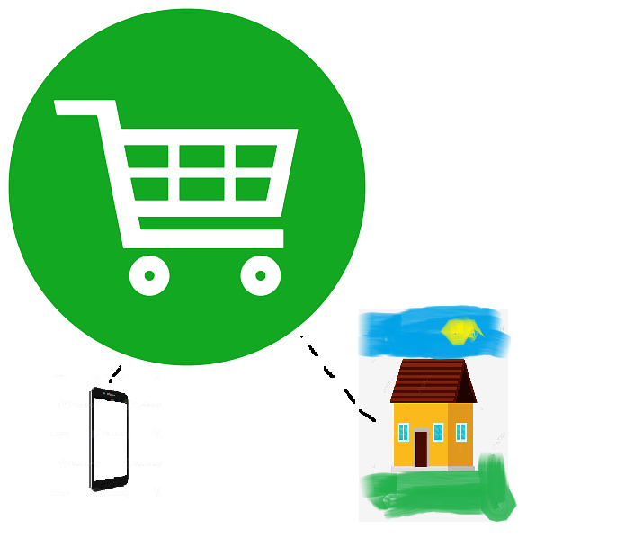
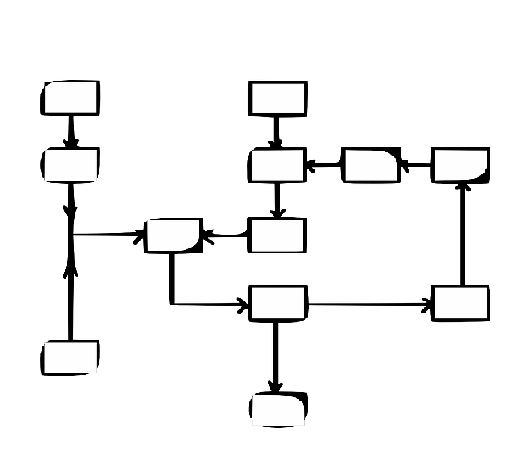
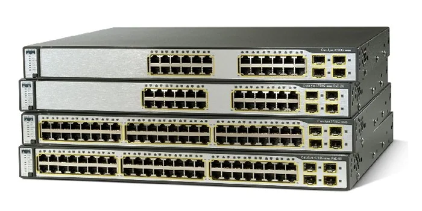
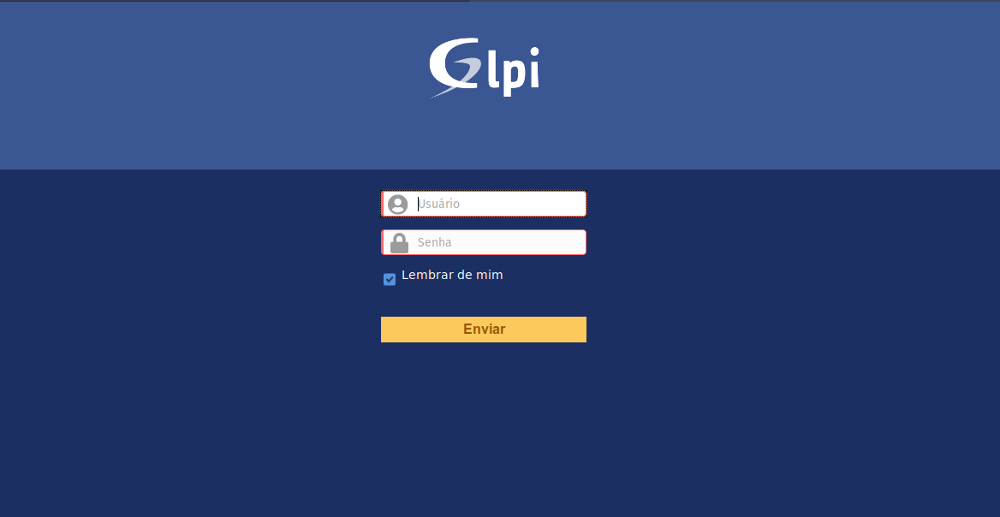

Temos como missão o seu retorno financeiro por meio de tecnologia!
A tecnologia deixou de ser uma ferramenta coadjuvante e passou a ser a principal, estamos
vivendo na sociedade da informação e comunicação e a empresa que não obedece o ditame deste
cotidiano é inevitalvemente jogada pra trás pelas concorrentes que se adequaram as regras
da tecno bussines. Sejam bem vindos a WEB 3.0!
Criação de sites:
Sites responsivos, com layouts modernos e seguros
para você expandir os horizontes de seu negocio! E
customização de acordo a sua preferência!

Lojas virtuais:
Criação de vitrines virtuais para o senhor mostrar seu produto,
marcas, formas de envio e pagamentos!

Criação de programas customizados:
Criamos programas de acordo com a sua necessidade de negocio:
#1- Armazene seu produtos e faça uma gestão das entradas e saidas
de suas mercadorias.
#2- Cadastre clientes.
#3- Cadastre funcionários.
#4- Obtenha historicos de compras de seus respectivos clientes.
#5 Outros.....

Auditória em redes/infra de computadores
Implementamos Serviços lógicos de Redes:
#1- Seguindo as boas práticas, configuramos a rede de computadores de sua
empresa.
#2- Com ferramentas homologadas apontamos as principais causas de lentidão
e gargalos de sua rede de computadores
#3- Trabalhamos com as marcas (antivírus) mais acreditadas em expurgação de vírus ou malware
em seus equipamentos.
#4- * Montamos a estrutura Windows de sua empresa.
#5- ** Somente trabalhamos com tecnologia windows original
* Empresa de qualquer tamanho.
** Vide a redação da cláusula nona do termo de contrato.

Instalação do GLPI
Implementação do service desk mais utilizado no mundo:
#1- Instalação, configuração e Customização.
#2- Treinamento in loco de inclusão de ativos, gestão do conhecimento e
aberturas de chamados.
#3- Mantenha e gerencie os serviços de sua T.I, controle as demandas de serviços e
usufrua de todo retorno que o seu setor de tecnologia da informação pode lhe proporcionar.